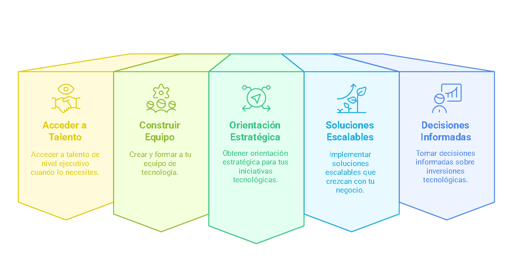

Fractional CTO
Liderança Tecnológica à Medida
No mundo digital atual, a tecnologia é crucial para o sucesso empresarial. No entanto, para startups emergentes e PMEs, contratar um Diretor de Tecnologia (CTO) a tempo inteiro pode representar um desafio financeiro significativo. É aqui que entra o conceito de Fractional CTO.
O que é exatamente um Fractional CTO?
Um Fractional CTO é um profissional tecnológico experiente que oferece os seus serviços e conhecimentos em tempo parcial, de acordo com as necessidades específicas da sua empresa. Atua como um parceiro estratégico que fornece liderança tecnológica sem o compromisso financeiro de uma contratação a tempo inteiro.
Em essência, um Fractional CTO permite-lhe:
Por que a sua startup ou PME necessita de um Fractional CTO?
- Experiência de nível executivo a custo acessível: Obtenha acesso a um profissional com anos de experiência em liderança tecnológica sem o custo de um salário executivo a tempo inteiro, reduzindo as suas despesas até 70%.
- Escalabilidade conforme as suas necessidades: Ajuste as horas e serviços de acordo com as necessidades específicas do seu negócio. Maior dedicação durante projetos críticos, menor quando a operação está estável.
- Tomada de decisões tecnológicas acertadas: Evite erros dispendiosos na seleção de tecnologias e fornecedores. Um Fractional CTO ajudará a escolher as soluções que realmente se alinham com os seus objetivos de negócio.
- Aceleração da sua transformação digital: Implemente novas tecnologias e processos digitais com a orientação de um especialista, reduzindo os tempos de adoção e minimizando interrupções.
- Estratégia tecnológica alinhada ao negócio: Desenvolva um roteiro tecnológico que responda aos objetivos da sua empresa e se adapte ao seu orçamento, priorizando investimentos com maior impacto.
- Construção e liderança de equipas técnicas: Receba apoio na contratação, formação e gestão da sua equipa técnica interna, estabelecendo as bases para um crescimento sustentável.
Serviços
Modelo de Colaboração Flexível
Ofereço uma abordagem personalizada que se adapta às necessidades específicas da sua empresa. A minha colaboração pode variar entre algumas horas semanais e vários dias por mês, dependendo do que o seu projeto exige em todos os aspectos de digitalização e tecnologias de informação. Especializo-me nas seguintes áreas:
Gestão de Equipas
Entendo o seu desafio: formar uma equipa tecnológica competente dentro do seu orçamento. Com mais de 18 anos a liderar equipas distribuídas internacionalmente, posso ajudá-lo a identificar talento adequado, estruturar colaborações internas/externas, otimizar recursos mantendo qualidade técnica, e mentorizar a equipa. Ofereço-lhe construir a estrutura tecnológica que necessita, com a flexibilidade orçamental que requer e a qualidade que o seu projeto merece.
Estratégia de tecnologia focada no seu negócio
Transformo a sua visão empresarial em tecnologia eficaz. Avalio a sua infraestrutura atual, defino o estado tecnológico ideal e seleciono as ferramentas que melhor se adaptam à sua escala e orçamento. Desenvolvo um roteiro claro com projetos priorizados e acompanho a sua implementação, garantindo que cada iniciativa gere valor real para o seu negócio. Converto a tecnologia num aliado estratégico que impulsiona o seu crescimento.
Design de Produto
Transformo ideias em produtos digitais escaláveis.
Transformo ideias em produtos digitais que os seus clientes realmente querem usar. Aplico arquitetura de software e Design Thinking para criar soluções escaláveis, desde um MVP económico até plataformas robustas conforme o seu crescimento. Cada decisão baseia-se em dados e no feedback, para garantir produtos que resolvem problemas do mercado, melhoram a experiência do utilizador e geram receitas sustentáveis.
Experiência
Trajetória Internacional
Com quase duas décadas de experiência em tecnologia, liderei equipas e projetos em múltiplos países, adaptando-me a diferentes culturas e ambientes de trabalho. A minha experiência abrange desde startups até empresas multinacionais, o que me proporcionou uma perspetiva única sobre como a tecnologia pode impulsionar o crescimento empresarial.
Experiência Global
- Portugal (Atual)
- fCTO em SmartVoting
- fCTO em MiasModa
- Chile
- Engineering Team Lead em Vacasa SpA
- Advanced Analytics Head em Option SpA
- IT Manager em TransUnion
- Colômbia
- Software Development Manager em TransUnion
- Software development Manager em DataCrédito (Experian)
- Guatemala
- Regional IT Manager em TransUnion
- Costa Rica
- IT Manager em TransUnion
Áreas de Prática
- I+D+i - Investigação, Desenvolvimento e Inovação
- Organização e liderança de equipa técnica
- Design de produtos digitais
- Desenvolvimento de Software ágil
- Análise funcional e requisitos
- Eficiência de processos
- Gestão de equipas técnicas
- Gestão de orçamentos de TI
- Arquitetura de software
- Blockchain
- Prompt Engineering
- Cloud Computing
- Bases de dados SQL & No-SQL
Opinião
Divulgação de temas técnicos
Partilho regularmente as minhas ideias sobre tecnologia, liderança e tendências da indústria através de artigos, conferências e publicações. O meu objetivo é contribuir para o diálogo sobre como a tecnologia pode ser uma força positiva para as empresas e a sociedade.
Videoconferência - Blockchain, O que é realmente?
Palestra de iniciação aos mecanismos e usos básicos de blockchain para a Fundação Cultural El Cinco a las Cinco. Fevereiro 2025 Ver mais
Artigo - Seguindo a pista de Satoshi Nakamoto
Comentário sobre os efeitos práticos da transparência, anonimato e imutabilidade da rede Ethereum. Fevereiro, 2025. Ver mais
Artigo - Blockchain: Transparente ou Anónima?
Explicação da aparente contradição entre as características de anonimato e transparência em Blockchain. Ver mais
Artigo - Finanças e Blockchain: Guia Simples de TradFi, CeFi e DeFi
Pequena introdução para entender algumas características diferenciadoras entre as novas modalidades de serviços financeiros baseados em blockchain. Janeiro, 2025. Ver mais
Artigo - Blockchain: A Paradoxo da Segurança
Como é possível que se ofereça blockchain como um repositório de dados ultra-seguro e, no entanto, todas as semanas encontramos notícias de serviços baseados em blockchain hackeados?. Janeiro, 2025. Ver mais
Conferência - Blockchain em ambientes empresariais
Videoconferência em espanhol para o Segundo Congresso Internacional de Engenharia da Universidade Livre Seccional Cúcuta. Novembro, 2023. Ver mais
Artigo - Classical Reads on Software Development Management
Comentário sobre diversos livros clássicos sobre Desenvolvimento de Software e Liderança de Tecnologia. Fevereiro, 2023. Ver mais
Artigo - Coronavírus, dados & responsabilidade
Revisão de diversos casos de má interpretação estatística de dados sobre COVID-19 nos meios de comunicação, seus potenciais impactos e alternativas para interpretá-los. Março, 2020. Ver mais
Clientes
Empresas que confiam em mim
Contate-me
Pronto para falar sobre o seu projeto?
Se está interessado em explorar como posso ajudar a sua empresa a alcançar os seus objetivos tecnológicos, agendemos uma chamada. Podemos discutir os seus desafios atuais e como a minha experiência pode beneficiar a sua organização.